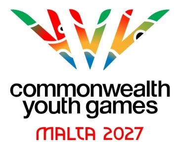
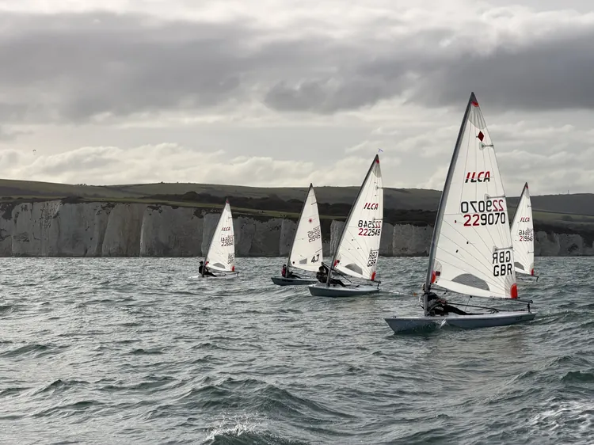
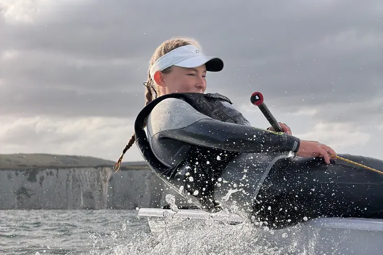
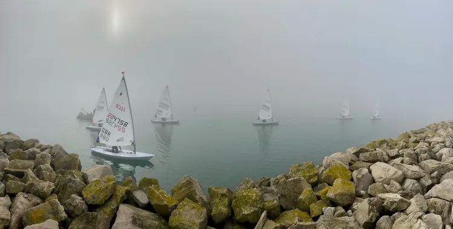
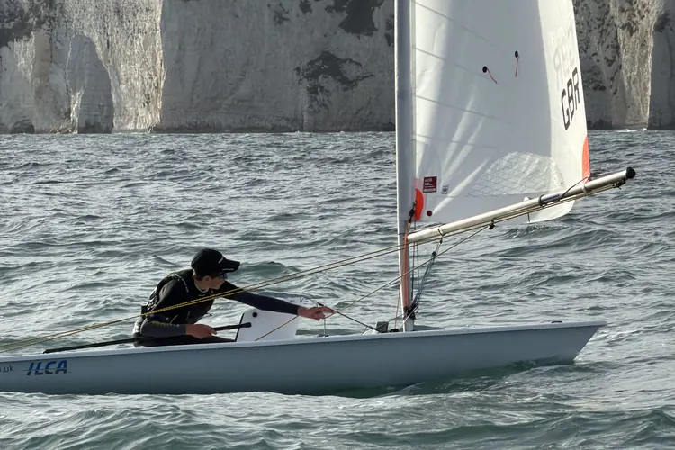

Just like the Commonwealth Games we know and love, the Commonwealth Youth Games, which started in 2000, is a multi-sport games similar to a mini Olympics. Malta 2027 expects around 1,200 athletes aged 14 to 18, from the Commonwealth’s 74 nations and territories, across eight sports. Sailing is one of them for the first time! How exciting!
This is not official information and is simply my take on what is out there, all of the official documentation is placed towards the bottom of this article.
- When30 Oct – 4 Nov 2027Opening ceremony 29 Oct
- WhereMellieħa BayNorth of Malta’s main island
- BoatsOptimist & ILCA 4Men’s and women’s events
- Medals4 eventsAll individual
Not Team GB
The big difference from the Olympics or a youth Worlds: you don’t sail for Great Britain. England, Wales, Scotland and Northern Ireland each send their own team, so you apply to represent one Home Country. The RYA, RYA Cymru Wales, RYA Scotland and RYA Northern Ireland are running one shared application for all four.
Sailing from the Isle of Man, Jersey or Guernsey? Each island has its own Commonwealth Games Association and team, so this RYA application may not be your route. Check with your island’s association.
It comes down to the year you were born. Ages are worked out as at 31 December 2027, so your birthday during the year doesn’t matter.
Tap your year of birth
Optimist: born 2012 or 2013 (aged 14–15). ILCA 4: born 2010 to 2013 (aged 14–17).
Born in 2012 or 2013? You could go for either boat, but you pick one event on the form. The form also asks which class you sail now, so you don’t have to be in that boat today to apply.

Which Home Country?
Photo: James Foster
You choose the Home Country you want to sail for. To be eligible you need a connection to it through one or more of these:
- Where you were born
- Where a parent was born
- Where a grandparent was born
- Where you live
- Nationality or citizenship
- Other routes Commonwealth Sport recognises
That means plenty of sailors qualify for more than one. The RYA’s own examples:
Born in England, lives in England, English parents and grandparents
EnglandBorn in England with a Scottish parent
EnglandScotlandBorn in Wales with a grandparent born in Northern Ireland
WalesNorthern Ireland?Has lived in Scotland for a significant period
ScotlandBorn in Wales, lives in England, Scottish grandparents
WalesEnglandScotland
The RYA says these are examples only and don’t guarantee eligibility. Northern Ireland’s rules can differ from the rest, so if you have a link there, give the full story on the form.
Eligible for more than one?
- Work out every Home Country you might be eligible for.
- Pick the one you want to sail for in this process.
- List the others on the form, and be ready to show evidence.
Evidence you might be asked for later
Not now, but have an idea where these are: passport(s), your birth certificate, a parent’s or grandparent’s birth certificate, proof of where you live, or nationality papers. If you’ve already represented a nation, Home Country or Commonwealth Games Association, say so on the form, because extra rules may apply.
Step one is an online Expression of Interest form. A sailor or a parent can fill it in. Read the RYA’s eligibility guidance first; the form asks you to confirm you have.
Closes 09:00 GMT, Monday 4 January 2027. That’s straight after New Year, so don’t leave it for the holidays.
What to have ready
- SailorName, date of birth, email, phone, address, sailing club
- NumbersClass association membership number and World Sailing Sailor ID, if you have them
- Parent or guardianName, email, phone, relationship to the sailor
- EventWhich of the four events, which class you sail now, your current coach
- Home CountryYour choice, why you’re eligible, any other Home Countries, any past representation, which documents you could provide
- Sailing CVMajor national and international results from the last 24 months, a link to an online results profile, your current training programme
- Your plansHow long you expect to stay in your class, when you expect to move up and into what, and whether you’re free for preparation and racing in autumn 2027
The class-change questions matter
The form asks when you expect to leave your current class: before 2027, during 2027, after Malta, during 2028 or later. If you were born in 2010 or 2011, a move to the ILCA 6 may well be on the cards by then. Answer honestly.
You finish by confirming four things: you’ve read the guidance, you understand the form doesn’t confirm eligibility, it doesn’t guarantee a longlist place or selection, and you agree to your details being shared between the four RYA bodies and the relevant Commonwealth Games Association.

The road to Malta
Photo: James Foster
Only RYA Northern Ireland has published its timeline so far. England, Wales and Scotland haven’t published theirs yet, but it shows the steps a sailor goes through.
- By 4 Jan 2027Expression of InterestAll four Home Countries. Every eligible sailor fills in the form.
- April 2027LonglistNI: RYA Northern Ireland sends a longlist to Commonwealth Games Northern Ireland.
- Summer 2027Regattas and selectionNI: details to be confirmed.
- After selectionShortlist approvedNI: shortlist goes to Commonwealth Games Northern Ireland for approval.
- September 2027Team announcedNI: Team NI named.
- 30 Oct – 4 Nov 2027Racing in MaltaMellieħa Bay. Opening ceremony 29 October.
Dates after the deadline are Northern Ireland’s. We’ll update this when the other Home Countries publish theirs.
In my opinion, the ranking of sailors within the class will most likely be the highest driving factor for selection. However you should expect there to be an element of preference to sailors who have performed in similar circumstances in the past such as major international competitions. I wouldn’t simply rely on having a great domestic ranking alone.
With all of this being said, what does it actually mean for you and your sailor?
Well, I would apply even if you aren’t ranked right at the top of the ranking currently and/or haven’t had a great set of international results to back up your position, because selection may take into account future events, which you may well perform really well at!
How to apply
Not known yet
Photo: James Foster
Questions parents ask us that nobody has answered publicly yet (as of 18 November 2026):
- How many places each Home Country gets per event
- The selection criteria and which regattas count
- Whether boats are supplied in Malta or teams bring their own
- What it costs families, if anything
- The racing format
We’ll add them here as they’re published.

All the links
Photo: James Foster
Questions about Northern Ireland eligibility: ryani@rya.org.uk.
Keep reading
Want a sounding board on whether to go for it, or help building towards selection? Ask in the WhatsApp group.
See our camps